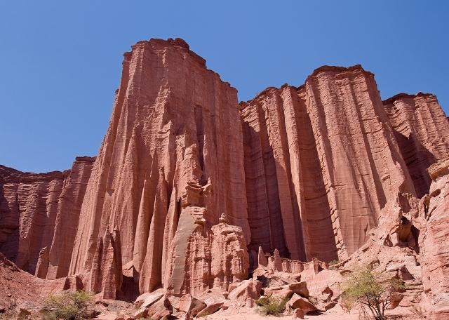

Región Cuyana
La región de Cuyo es una mezcla única de paisajes inhóspitos de alta montaña, historia, tradición,
naturaleza y vino.
¡Acompañanos en este descubrimiento!

- Pasaje aéreo (Salidas desde cualquier punto del país)
- Traslados (aeropuerto / hotel / aeropuerto)
- 2 noches de alojamiento en San Juan, con desayuno.
- 1 nochee de alojamiento en Valle Fértil, con desayuno.
- 3 noches de alojamiento en Mendoza, con desayuno.
- Excursiones en San Juan: Valle de la Luna y City tour + Talampaya (Argentina y Paraguay)
- Excursiones en Mendoza: Caminos del vino + city tour + Alta montaña
Paquete San Juan y Mendoza: 6 días